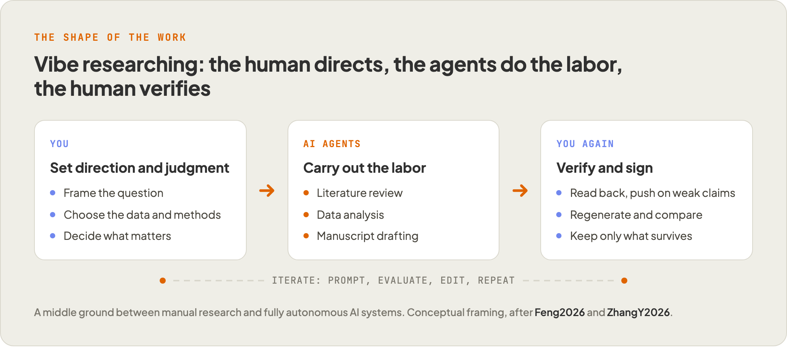
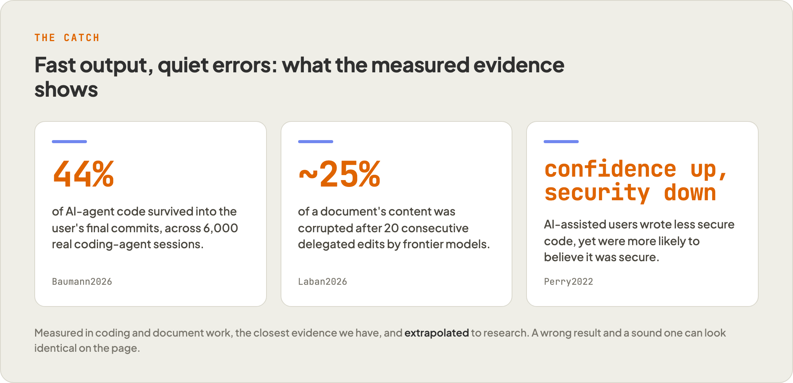
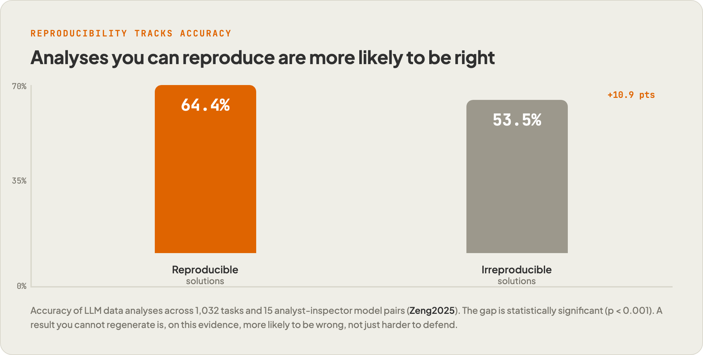
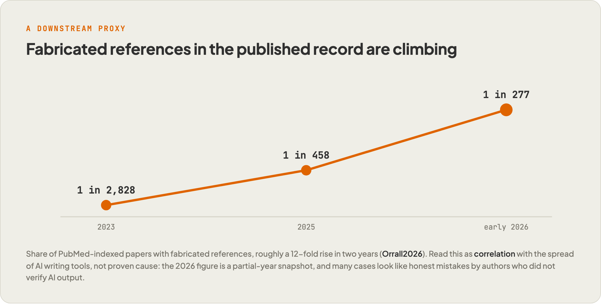

A neutral look at what happens when researchers direct AI agents to do the work, why the appeal is real, and why the errors are the kind that do not announce themselves.
A new way of doing research has arrived, and it does not look like research. It looks like a conversation. The labor moves to an agent, the direction and judgment stay with the human, and the work comes back fast enough to feel almost free. The appeal is real. So is the risk, and it is harder to see, because the errors this mode produces tend to stay quiet. This piece tries to weigh both.
What vibe researching actually is
Picture a researcher who opens a chat window instead of a code editor. She describes the question, points the agent at a folder of PDFs, and asks for a thematic synthesis. The agent reads, drafts, and proposes an analysis. She reads back, pushes on a weak inference, asks for another pass, and keeps only what survives. The literature review, the first cut of the data work, the early manuscript paragraphs: the agent does the labor, she gives the direction and judgment.
That loop now has a name. Feng2026 defines "vibe researching" as a mode of inquiry in which a human provides high-level direction, intuition, and critical evaluation while LLM agents carry out the labor-intensive parts: literature review, experimentation, data analysis, and manuscript drafting. The framing positions the practice as a middle ground between fully manual research and fully autonomous AI research systems, rather than either extreme.
It is the research-side parallel to "vibe coding," the programming style Sarkar2025 describes as orchestrating AI-mediated work through iterative loops of prompt, evaluate, edit, repeat while keeping selective oversight. ZhangY2026 casts vibe researching as the AI-era counterpart. One caution up front: these are conceptual definitions, not measured outcomes, so much of what follows extrapolates from coding and analysis evidence to research itself.

Why it spreads, and why the appeal is real
The pull is genuine, not marketing. Adoption is broad and rising: 84% of developers now use or plan to use AI tools, up from 76% the year before (StackOverflow2025a). The reasons people give for it hold up under scrutiny.
The first reason is speed and access. A review of 101 practitioner sources and 518 firsthand accounts found people motivated by exactly those two things, and that the barrier drops low enough for non-programmers to build (Fawzy2025). The second is flow: the same accounts describe rapid, almost frictionless progress, and a qualitative study links that "joy" to a state of synchronized, uninterrupted work (Pimenova2025, Fawzy2025).
The third reason is specific to research, where the time compression is dramatic. Synthesizing 100 to 200 papers normally takes two to three weeks; an AI literature-review step can query a 20,000-item library in seconds and produce a thematic synthesis in under ten minutes (ZhangY2026). And here is the tension. The properties that make this appealing, fluent output and instant momentum, are precisely the ones that make its errors hard to see.
The errors that do not announce themselves
Start with what we can actually measure, which so far means coding and document work, not research itself. The definitions of vibe researching are conceptual maps, not measured outcomes, so the numbers below come from adjacent evidence on agent-assisted code and editing. They are sobering.
Begin with survival. In a study of 6,000 real coding-agent sessions, only 44% of agent-produced code made it into the user's final commits, and users pushed back on the agent in 44% of all turns (Baumann2026). Half the work is discarded, half the exchanges involve correcting course, and agent-written code introduced more security vulnerabilities than human-authored code.
Delegation over time fares worse. Across a benchmark of fifty-two document-editing domains, frontier models corrupted an average of 25% of document content after twenty consecutive delegated edits, rising to 50% averaged across all nineteen models tested (Laban2026). The corruption was sparse but severe, the kind that silently degrades a document and compounds across a long interaction.
The most uncomfortable finding is about us. In the first large controlled study of an AI coding assistant, the 47 participants with AI access wrote significantly less secure code yet were more likely to believe it secure (Perry2022). That is automation bias in plain view: confidence rising as quality falls.
This is why a flawed analysis is so dangerous. The output does not signal its own invalidity. A wrong result and a sound one look identical on the page, so nothing prompts the review that would catch it.

When you cannot reproduce your own result
The problem runs deeper than catching a bad output, because a single LLM analysis run is not, on its own, reliable. When the same analysis was repeated under identical configurations, the outputs still varied considerably across runs (Cui2026). The fix is discipline: run any analysis several times independently and look at the distribution rather than trusting one output (Cui2026).
Reproducibility is not only hygiene, it tracks accuracy. In an analyst-inspector study spanning 1,032 tasks and 15 LLM pairs, reproducible solutions were significantly more accurate than irreproducible ones, 64.4% versus 53.5% (p < 0.001), and prompting for reproducibility raised both at once (Zeng2025). So a result you cannot regenerate is, on the present evidence, more likely to be wrong, not just harder to defend.
The published record now shows a downstream proxy for this. Fabricated references in PubMed-indexed papers rose roughly 12-fold in two years, reaching about 1 in 277 papers in early 2026, with the steepest rise coinciding with the mid-2024 spread of AI writing tools (Orrall2026). Read that as correlation, not proven cause: the figures are partial-year snapshots, and most cases look like honest mistakes by authors who used AI output without verifying it (Orrall2026).


What good practice looks like
The pattern that holds up is verification-first over blanket trust, and skepticism tends to track better results. In the security study above, participants who trusted the assistant less and engaged more with their prompts produced code with fewer vulnerabilities (Perry2022). That posture translates into a short list of habits.
Read the distribution, not a single output. Because one LLM run is not reliable, run any analysis multiple times and look at the spread (Cui2026).
Keep reproducibility as a first-class goal, since reproducible solutions were significantly more accurate (Zeng2025).
Treat prompts as versioned, reviewed artifacts with a human in the loop. AcademicVibe2025 argues for elevating prompts to first-class research objects that are versioned, reviewed, and tested in CI, while insisting AI is no replacement for expert oversight.
Verify citations, disclose AI assistance, and stay author rather than curator. ZhangY2026 makes those its core principles, warning that the researcher who only selects among AI-generated options has stopped doing the research.
The researcher stays accountable
Speed and verification are not opposites. The definitions of vibe researching make accountability the load-bearing role: the human as Creative Director who delegates with oversight, refines, and signs the result (Feng2026). ZhangY2026 puts it plainly: augmentation is real but fragile, and it holds only while the researcher stays author, judge, and owner, because verification needs the same expertise as production. Both are conceptual proposals, and most of the hard evidence here is still borrowed from coding and analysis.
None of this argues against the practice. It argues for calibration. The speed is worth having, and it stays worth having for as long as someone keeps reading the distribution, regenerating the result, and signing only what survives. That habit is not a tax on the work. On the present evidence, it is what makes the work true.
References
Sources cited inline above.
- AcademicVibe2025. Not captured (arXiv 2508.00952). Academic Vibe Coding: Opportunities for Accelerating Research in an Era of Resource Constraint. arXiv, 2025.
- Baumann2026. Joachim Baumann, Vishakh Padmakumar, Xiang Li, John Yang, Diyi Yang, Sanmi Koyejo. SWE-chat: Coding Agent Interactions From Real Users in the Wild. arXiv, 2026.
- Cui2026. Jiaxin Cui, Rohan Alexander. Same Prompt, Different Outcomes: Evaluating the Reproducibility of Data Analysis by LLMs. arXiv, 2026.
- Fawzy2025. Ahmed Fawzy, Amjed Tahir, Kelly Blincoe. Vibe Coding in Practice: Motivations, Challenges, and a Future Outlook -- a Grey Literature Review. arXiv, 2025.
- Feng2026. Yebo Feng, Yang Liu. A Visionary Look at Vibe Researching. arXiv, 2026.
- Laban2026. Philippe Laban, Tobias Schnabel, Jennifer Neville. LLMs Corrupt Your Documents When You Delegate. arXiv, 2026.
- Orrall2026. Avery Orrall. One in 277 PubMed-indexed papers in 2026 shows fabricated references, says analysis. Retraction Watch, 2026.
- Perry2022. Neil Perry, Megha Srivastava, Deepak Kumar, Dan Boneh. Do Users Write More Insecure Code with AI Assistants?. arXiv (later ACM CCS 2023), 2022.
- Pimenova2025. Veronica Pimenova, Sarah Fakhoury, Christian Bird, Margaret-Anne Storey, Madeline Endres. Good Vibrations? A Qualitative Study of Co-Creation, Communication, Flow, and Trust in Vibe Coding. arXiv, 2025.
- Sarkar2025. Advait Sarkar, Ian Drosos. Vibe coding: programming through conversation with artificial intelligence. arXiv, 2025.
- StackOverflow2025a. Stack Overflow. AI | 2025 Stack Overflow Developer Survey. Stack Overflow (Developer Survey), 2025.
- Zeng2025. Qiuhai Zeng, Claire Jin, Xinyue Wang, Yuhan Zheng, Qunhua Li. AIRepr: An Analyst-Inspector Framework for Evaluating Reproducibility of LLMs in Data Science. arXiv, 2025.
- ZhangY2026. Yongjun Zhang. Vibe Researching as Wolf Coming: Can AI Agents with Skills Replace or Augment Social Scientists?. arXiv preprint, 2026.
The complete literature reviewed
This piece sits on a systematic, PRISMA-lite review. After de-duplication and screening, 188 sources met the inclusion criteria across arXiv, PubMed, bioRxiv, medRxiv, PubMed Central, and credible grey literature. The full set is listed below for anyone who wants to check the basis for the claims above or read further.
- (arXiv 2601.16909). Preventing the Collapse of Peer Review Requires Verification-First AI. arXiv preprint, 2026.
- (arXiv 2603.20450). Policies Permitting LLM Use for Polishing Peer Reviews Are Currently Not Enforceable. arXiv preprint, 2026.
- (arXiv 2604.04319). Effects of Generative AI Errors on User Reliance Across Task Difficulty. arXiv preprint, 2026.
- A. Sina Booeshaghi, Aaron Streets. Token Alignment for Verifying LLM-Extracted Text. bioRxiv, 2026.
- Abani Neferkara, Asif Ali, David Pincus. Cellquant: a vibecoder's guide to image analysis. bioRxiv, 2026.
- ADTmag (Application Development Trends). Developers Lean on AI More, But Report Growing Doubts About Accuracy, Stack Overflow Survey Says. ADTmag, 2026.
- Ahmed Fawzy, Amjed Tahir, Kelly Blincoe. From Prompting to Verification: How Experience Shapes Vibe Coding Practices. arXiv, 2026.
- Aizierjiang Aiersilan. The Vibe-Check Protocol: Quantifying Cognitive Offloading in AI Programming. arXiv, 2026.
- Artificial intelligence and deskilling in medicine.. The British Journal of Psychiatry, 2026.
- Automation bias and overconfidence in artificial intelligence and associated legal implications.. Clinical Imaging, 2026.
- Avery Orrall. One in 277 PubMed-indexed papers in 2026 shows fabricated references, says analysis. Retraction Watch, 2026.
- Bang Nguyen, Dominik Soos, Qian Ma, Rochana R. Obadage, Zack Ranjan, Sai Koneru, Timothy M. Errington. ReplicatorBench: Benchmarking LLM Agents for Replicability in Social and Behavioral Sciences. arXiv, 2026.
- Cameron S Movassaghi, Amanda Momenzadeh, Jesse G Meyer. From articles to code: on-demand generation of core algorithms from scientific publications. PMC, 2026.
- Carlos Rafael Catalan, Lheane Marie Dizon, Patricia Nicole Monderin, Emily Kuang. "I'm Not Reading All of That": Understanding Software Engineers' Level of Cognitive Engagement with Agentic Coding Assistants. arXiv, 2026.
- CDC. Considerations for Disclosing Generative AI Use in Scientific Work. U.S. CDC, 2026.
- Cecilie Steenbuch Traberg, Jon Roozenbeek, Sander van der Linden. AI is turning research into a scientific monoculture. biomedrxiv (Commun Psychol), 2026.
- Chang Liu, Qinyi Zhou, Xinjie Shen, Xingyu Bruce Liu, Tongshuang Wu, Xiang 'Anthony' Chen. Behavioral Indicators of Overreliance During Interaction with Conversational Language Models. arXiv, 2026.
- Christopher Koch. Agentic Agile-V: From Vibe Coding to Verified Engineering in Software and Hardware Development. arXiv, 2026.
- Comparative evaluation of large language models for biotechnology review writing.. Biotechnology Advances, 2026.
- Daiana Rinja, Eduardo Araujo Oliveira, Sonsoles Lopez-Pernas, Mohammed Saqr, Marcus Specht, Kamila Misiejuk. Unpacking Vibe Coding: Help-Seeking Processes in Student-AI Interactions While Programming. arXiv, 2026.
- daily.dev. Vibe Coding Explained: AI-Driven Development in 2026. daily.dev, 2026.
- Danielle R. Thomas, Conrad Borchers, Kirk P. Vanacore, Kenneth R. Koedinger, Rene F. Kizilcec. Modernizing Ground Truth: Four Shifts Toward Improving Reliability and Validity in AI in Education. arXiv, 2026.
- Dinh Long Huynh, Elin Asp, Flavio Ballante, Jordi Carrera, et al.. Human-supervised Agentic AI for Hypothesis Generation and computational drug repurposing. bioRxiv, 2026.
- Eira May. Mind the gap: Closing the AI trust gap for developers. Stack Overflow Blog, 2026.
- Generative AI in health faculties: a French national charter for responsible use (governance, accountability, data protection).. Sante Publique, 2026.
- Guiyao Tie, Jiawen Shi, Dingjie Song, Yixiao Huang, Ziji Sheng, Xueyang Zhou, et al.. AutoResearch AI: Towards AI-Powered Research Automation for Scientific Discovery. arXiv, 2026.
- H Sharma, M Ruikar. Algorithmic sycophancy: A new source of systematic distortion in AI-driven biomedical research. biomedrxiv (J Postgrad Med), 2026.
- Haoyu Hu, Raja Marjieh, Katherine M Collins, Chenyi Li, Thomas L. Griffiths, Ilia Sucholutsky, et al.. Why Human Guidance Matters in Collaborative Vibe Coding. arXiv, 2026.
- Hongyu He, Shaowen Xiang, Ye Zhang, Yingtao Zhu, Jin Zhang, Hao Deng, Emily Alsentzer, Qingyu Chen, et al.. AI-generated data contamination erodes pathological variability and diagnostic reliability. bioRxiv, 2026.
- Hyunwoo Kim, Harin Yu, Hanau Yi. The LLM Fallacy: Misattribution in AI-Assisted Cognitive Workflows. arXiv, 2026.
- ICML 2026 Program Chairs. On Violations of LLM Review Policies (ICML 2026). ICML Blog, 2026.
- Ilias Chalkidis, Anders Sogaard. Brainrot: Deskilling and Addiction are Overlooked AI Risks. arXiv, 2026.
- In Defense of AI as an 'Author': Ethical Implications for Scientific Authors, Reviewers, Editors, and Publishing Policies.. Head and Neck Pathology, 2026.
- International AI Safety Report expert panel. International AI Safety Report 2026. arXiv (International AI Safety Report), 2026.
- Ivo Djidrovski. ToxMCP: Guardrailed, Auditable Agentic Workflows for Computational Toxicology via the Model Context Protocol. bioRxiv, 2026.
- Jasmine Moreira. IACDM: Interactive Adversarial Convergence Development Methodology. arXiv, 2026.
- Jiaxin Cui, Rohan Alexander. Same Prompt, Different Outcomes: Evaluating the Reproducibility of Data Analysis by LLMs. arXiv, 2026.
- Joachim Baumann, Vishakh Padmakumar, Xiang Li, John Yang, Diyi Yang, Sanmi Koyejo. SWE-chat: Coding Agent Interactions From Real Users in the Wild. arXiv, 2026.
- Judy Hanwen Shen, Alex Tamkin. How AI Impacts Skill Formation. arXiv, 2026.
- Kaleigh F. Roberts, Zachary B. Abrams, Luca Cappelletti, et al.. OpenScientist: evaluating an open agentic AI co-scientist for biomedical data analysis. medRxiv, 2026.
- Katja Karhu, Kari Smolander, Jussi Kasurinen. To Vibe Research or Not to Vibe Research? Generative AI in Qualitative Research. arXiv, 2026.
- Lee Jones, Adrian Barnett, Gunter Hartel, Dimitrios Vagenas. Challenges in the Computational Reproducibility of Linear Regression Analyses: An Empirical Study. medRxiv, 2026.
- Leon van Bokhorst, Koen Suilen. Vibe coding before the trend. arXiv, 2026.
- Lydia Ashton. Vibe Econometrics and the Analysis Contract. arXiv, 2026.
- Magnus Palmblad, Jared M. Ragland, Benjamin A. Neely. Agentic AI-assisted coding offers a unique opportunity to instill epistemic grounding during software development. arXiv, 2026.
- Masahiko Saito, Tomoe Kishimoto, Junichi Tanaka. Development of an LLM-Based System for Automatic Code Generation from HEP Publications. arXiv, 2026.
- Michael Caosun, Sinan Aral. The Augmentation Trap: AI Productivity and the Cost of Cognitive Offloading. arXiv, 2026.
- Michal Topfer, Frantisek Plasil, Tomas Bures, Petr Hnetynka. Vibe-Coding: Feedback-Based Automated Verification with no Human Code Inspection, a Feasibility Study. arXiv, 2026.
- Miklos Koren, Gabor Bekes, Julian Hinz, Aaron Lohmann. Vibe Coding Kills Open Source. arXiv, 2026.
- Nahema Marchal, Stephanie Chan, Matija Franklin, Manon Revel, Geoff Keeling, Roberta Fischli, Bilva Chandra, Iason Gabriel. Architecting Trust in Artificial Epistemic Agents. arXiv, 2026.
- Nature (research article). Artificial intelligence tools expand scientists' impact but contract science's focus. Nature, 2026.
- Niskanen Center. Can AI 'vibe research' replace social science?. Niskanen Center, 2026.
- Paul Windisch, Carole Koechli, Fabio Dennstadt, Daniel M Aebersold, Daniel R Zwahlen, Robert Forster, et al.. Is one run enough? Reproducibility of flagship large language models across temperature and reasoning settings in biomedical text processing. biomedrxiv (JAMIA), 2026.
- Philippe Laban, Tobias Schnabel, Jennifer Neville. LLMs Corrupt Your Documents When You Delegate. arXiv, 2026.
- Qiaohong Zhang, Weihao Ye, Jialong Chen, Yi Luo, BoYuan Li, Bowen Deng, Zibin Zheng, Jianhao Lin, Wei-Shi Zheng, Chuan Chen. DataClawBench: An Agent Benchmark for Exploratory Real-World Financial Data Analysis. arXiv, 2026.
- R&D World. Software broke scientific reproducibility. AI hallucinations made it worse. Now the same technology is learning to catch its own mistakes.. Research & Development World, 2026.
- Rafal Labedzki, Patryk Miziula, Hubert Rutkowski, Szymon Betlewski, Cezary Depta, Szymon Janowski, et al.. Business Utility of Large Language Models as Exploratory Data Analysis Agents. arXiv, 2026.
- Razeen A Rasheed, Somnath Banerjee, Animesh Mukherjee, Rima Hazra. From Fluent to Verifiable: Claim-Level Auditability for Deep Research Agents. arXiv, 2026.
- Retraction Watch. NEJM retracts case study for AI-manipulated imagery. Retraction Watch, 2026.
- Rose E. Guingrich, Dvija Mehta, Umang Bhatt. Belief Offloading in Human-AI Interaction. arXiv, 2026.
- S M Jamil Uddin. Is Vibe Coding the Future? An Empirical Assessment of LLM Generated Codes for Construction Safety. arXiv, 2026.
- Saket Sanjeev Chaturvedi, Joshua Bergerson, Tanwi Mallick. Toward Reliable, Safe, and Secure LLMs for Scientific Applications. arXiv, 2026.
- Sasi Kiran Gaddipati, Diyana Muhammed, Farhana Keya, Gollam Rabby, Soren Auer. MLReplicate: Benchmarking Autonomous Research Systems for Machine Learning Reproducibility. arXiv, 2026.
- Sebastian Baltes, Marc Cheong, Christoph Treude. "An Endless Stream of AI Slop": The Growing Burden of AI-Assisted Software Development. arXiv, 2026.
- Sebastian Labenbacher, Maximilian Niederer, Sascha Hammer, Matthias Bader, Nikolaus Schreiber, et al.. Performance of AI Tools in Citing Retracted Literature: Content Analysis. biomedrxiv (JMIR), 2026.
- Shreyansh Agrawal, Harsh B. Anadkat, Kiran K. Athimoolam, Harsh Bhardwaj, Trishul Chowdhury, et al.. Can AI Conduct Autonomous Scientific Research? Case Studies on Two Real-World Tasks. bioRxiv, 2026.
- Shyam Agarwal, Hao He, Bogdan Vasilescu. AI IDEs or Autonomous Agents? Measuring the Impact of Coding Agents on Software Development. arXiv, 2026.
- Silke Kniffert, Ben Katthofer, Robert Emprechtinger, Pasquale Pellegrini, Eva Maria Funk, et al.. Set-up, validation, evaluation, and cost-benefit analysis of an AI-assisted assessment of responsible research practices in a sample of life science publications. bioRxiv, 2026.
- Song Wang. VibeContract: The Missing Quality Assurance Piece in Vibe Coding. arXiv, 2026.
- STAT News. Fraudulent citations, blamed on AI hallucinations, are becoming more common in research papers. STAT News, 2026.
- Stephan Rabanser, Sayash Kapoor, Peter Kirgis, Kangheng Liu, Saiteja Utpala, Arvind Narayanan. Towards a Science of AI Agent Reliability. arXiv, 2026.
- Stephen D. Auger, Gregory Scott. Medical errors in large language models revealed using 1,000 synthetic clinical transcripts. medRxiv, 2026.
- The FEBS Journal in 2026: Safeguarding scientific integrity amid the rise of the machines.. The FEBS Journal, 2026.
- The Role of Large Language Models in Scientific Research.. RoFo, 2026.
- The Scientist. arXiv Takes the First Step to Combat 'AI Slop' in Submissions. The Scientist, 2026.
- Trend Micro. The Real Risk of Vibecoding. Trend Micro Research, 2026.
- Unmet Needs and Service Priorities for ADHD in Australia: AI-Assisted Analysis of Senate Inquiry Submissions.. Int J Environ Res Public Health, 2026.
- Vehid Geruslu, Zulfiyya Aliyeva, Eray Tuzun. Factors Influencing the Quality of AI-Generated Code: A Synthesis of Empirical Evidence. arXiv, 2026.
- VibeX 2026 Workshop Organizers. VibeX 2026: 1st International Workshop on Vibe Coding and Vibe Researching (EASE 2026). EASE 2026 (researchr.org), 2026.
- Vlastimil Martinek, Andrea Gariboldi, Dimosthenis Tzimotoudis, Mark Galea, Elissavet Zacharopoulou, et al.. Agentomics: An Agentic System that Autonomously Develops Novel State-of-the-art Solutions for Biomedical Machine Learning Tasks. bioRxiv, 2026.
- Xiaoyu Zhang et al.. Benchmarking Agentic Bioinformatics Systems for Complex Practical Tasks. bioRxiv, 2026.
- Xinyi Zhou, Zeinadsadat Saghi, Sadra Sabouri, Rahul Pandita, Mollie McGuire, Souti Chattopadhyay. Cognitive Biases in LLM-Assisted Software Development. arXiv, 2026.
- Yebo Feng, Yang Liu. A Visionary Look at Vibe Researching. arXiv, 2026.
- Ying Xie. VibeGuard: A Security Gate Framework for AI-Generated Code. arXiv, 2026.
- Yongjun Zhang. Vibe Researching as Wolf Coming: Can AI Agents with Skills Replace or Augment Social Scientists?. arXiv preprint, 2026.
- Yuhao Zhan, Tianyu Fan, Linxuan Huang, Zirui Guo, Chao Huang. Why Your Deep Research Agent Fails? On Hallucination Evaluation in Full Research Trajectory. arXiv, 2026.
- Zhicheng Lin, Aamir Sohail. Recalibrating academic expertise in the age of generative AI. biomedrxiv (Patterns), 2026.
- Zihao Wu, Steven Xu, Bowen Chen, Shaowen Wan, Yiwei Li, Wei Ruan, et al.. Vibe Medicine: Redefining Biomedical Research Through Human-AI Co-Work. arXiv, 2026.
- Advait Sarkar, Ian Drosos. Vibe coding: programming through conversation with artificial intelligence. arXiv, 2025.
- Ahmed Fawzy, Amjed Tahir, Kelly Blincoe. Vibe Coding in Practice: Motivations, Challenges, and a Future Outlook -- a Grey Literature Review. arXiv, 2025.
- Alisa Welter, Niklas Schneider, Tobias Dick, Kallistos Weis, Christof Tinnes, Marvin Wyrich, Sven Apel. From Developer Pairs to AI Copilots: A Comparative Study on Knowledge Transfer. arXiv, 2025.
- Amena Amro, Manar H. Alalfi. GitHub's Copilot Code Review: Can AI Spot Security Flaws Before You Commit?. arXiv, 2025.
- Amr Mohamed, Maram Assi, Mariam Guizani. The Impact of LLM-Assistants on Software Developer Productivity: A Systematic Review and Mapping Study. arXiv, 2025.
- Anthropic. How AI assistance impacts the formation of coding skills. Anthropic (research), 2025.
- Brenda Nogueira, Werner Geyer, Andrew Anderson, Toby Jia-Jun Li, Dongwhi Kim, Nuno Moniz, Nitesh V. Chawla. From Verification Burden to Trusted Collaboration: Design Goals for LLM-Assisted Literature Reviews. arXiv, 2025.
- Brice Edelman, Jeffrey Skolnick. Valsci: an open-source, self-hostable literature review utility for automated large-batch scientific claim verification using large language models. PMC, 2025.
- Burhan Fatih Kocyigit, Ramazan Azim Okyay, Birzhan Seiil, Ainur B. Qumar, Hilmi Erdem Sumbul. Analysis of Retracted Publications on Artificial Intelligence: Trends, Ethical Concerns, and Scientific Integrity. PMC, 2025.
- Clark J, Barton B, Albarqouni L, et al.. Generative artificial intelligence use in evidence synthesis: A systematic review.. Research Synthesis Methods, 2025.
- Cloud Security Alliance. CSA Research Note: AI-Generated Code Security - Vibe Coding (Credential Sprawl and SDLC Debt). Cloud Security Alliance (Lab Space), 2025.
- Cory Knobel, Nicole Radziwill. Vibe Coding: Is Human Nature the Ghost in the Machine?. arXiv, 2025.
- Cristina Cornelio, Takuya Ito, Ryan Cory-Wright, Sanjeeb Dash, Lior Horesh. The Need for Verification in AI-Driven Scientific Discovery. arXiv, 2025.
- Cuiyun Gao, Guodong Fan, Chun Yong Chong, Shizhan Chen, Chao Liu, David Lo, Zibin Zheng, Qing Liao. A Systematic Literature Review of Code Hallucinations in LLMs: Characterization, Mitigation Methods, Challenges, and Future Directions for Reliable AI. arXiv, 2025.
- Dang Anh-Hoang, Vu Tran, Le-Minh Nguyen. Survey and analysis of hallucinations in large language models: attribution to prompting strategies or model behavior. PMC, 2025.
- Diogo Pellegrina, Mohamed Helmy. AI for scientific integrity: detecting ethical breaches, errors, and misconduct in manuscripts. PMC, 2025.
- Emanuela Guglielmi, Venera Arnoudova, Gabriele Bavota, Rocco Oliveto, Simone Scalabrino. How do Copilot Suggestions Impact Developers' Frustration and Productivity?. arXiv, 2025.
- Endoscopist deskilling risk after exposure to artificial intelligence in colonoscopy: a multicentre, observational study.. The Lancet Gastroenterology & Hepatology, 2025.
- Engin Iyidogan, Ali I. Ozkes. Agentic AI and Hallucinations. arXiv, 2025.
- Feiyang Xu, Poonacha K. Medappa, Murat M. Tunc, Martijn Vroegindeweij, Jan C. Fransoo. AI-Assisted Programming Decreases the Productivity of Experienced Developers by Increasing the Technical Debt and Maintenance Burden. arXiv, 2025.
- Gabrielle O'Brien. How Scientists Use Large Language Models to Program. arXiv, 2025.
- Generative Artificial Intelligence in Medical Education: Enhancing Critical Thinking or Undermining Cognitive Autonomy?. Journal of Medical Internet Research, 2025.
- Guijin Son, Jiwoo Hong, Honglu Fan, Heejeong Nam, Hyunwoo Ko, Seungwon Lim, Jinyeop Song, et al.. When AI Co-Scientists Fail: SPOT-a Benchmark for Automated Verification of Scientific Research. arXiv, 2025.
- Han H. Challenges of reproducible AI in biomedical data science.. BMC Medical Genomics, 2025.
- Ihsan Ayyub Qazi, Ayesha Ali, Asad Ullah Khawaja, Muhammad Junaid Akhtar, Ali Zafar Sheikh, et al.. Automation Bias in Large Language Model Assisted Diagnostic Reasoning Among AI-Trained Physicians. medRxiv, 2025.
- Isabel Tretow, Moritz Schwebel, Stefan Feuerriegel, Theresa Treffers, Isabell M. Welpe. The Effect of LLM Assistance on Diagnostic Accuracy: A Meta-Analysis. medRxiv, 2025.
- Jacqueline A. Jansen, Artur Manukyan, Nour Al Khoury, Altuna Akalin. Leveraging large language models for data analysis automation. PLOS ONE (PMC), 2025.
- Jacqueline Mitchell, Yasser Shaaban. Position: Vibe Coding Needs Vibe Reasoning: Improving Vibe Coding with Formal Verification. arXiv, 2025.
- Jeongbin Park. Towards a transparent and reproducible AI-assisted research paper writing. PMC, 2025.
- Jie Li, Youyang Hou, Laura Lin, Ruihao Zhu, Hancheng Cao, Abdallah El Ali. Vibe Coding for Product Design: Understanding Product Team Members' Perceptions of AI-Assisted Design and Development. arXiv, 2025.
- Kiev Gama, Filipe Calegario, Victoria Jackson, Alexander Nolte, Luiz Augusto Morais, Vinicius Garcia. "Can you feel the vibes?": An exploration of novice programmer engagement with vibe coding. arXiv, 2025.
- Kirubel Biruk Shiferaw, Irina Balaur, Gary Collins, Curtis Sharma, Leyla Jael Castro, Fotis Psomopoulos, et al.. Calibrating CONSORT-AI with FAIR Principles to enhance reproducibility in AI-driven clinical trials. medRxiv, 2025.
- Lan Yao, Tianshu Gu, Xuexin Li, Yan Jiao, Minghui Li, J. Carolyn Graff, Yulan Li, Weikuan Gu. AI misuse of retracted literature: A comparative study of ChatGPT4o, deepseek, and grok 3 in stem cell research. PMC, 2025.
- Lijia Yu, Daniel Kim, Yue Cao, Matthew Wei Shun Shu, Maya Shen, et al.. Large Language Models for Accessible Reporting of Bioinformatics Analyses in Interdisciplinary Contexts. PMC, 2025.
- Ludovico Mitchener, Angela Yiu, Benjamin Chang, et al. (FutureHouse). Kosmos: An AI Scientist for Autonomous Discovery. arXiv, 2025.
- Lujain Ibrahim, Katherine M. Collins, Sunnie S. Y. Kim, Anka Reuel, Max Lamparth, Kevin Feng, et al.. Measuring and mitigating overreliance is necessary for building human-compatible AI. arXiv, 2025.
- Luo X, Tham YC, Giuffre M, et al.. Reporting guideline for the use of Generative Artificial intelligence tools in MEdical Research: the GAMER Statement.. BMJ Evidence-Based Medicine, 2025.
- Mahmud Omar, Vera Sorin, Jeremy D. Collins, David Reich, Robert Freeman, Nicholas Gavin, et al.. Large Language Models Are Highly Vulnerable to Adversarial Hallucination Attacks in Clinical Decision Support: A Multi-Model Assurance Analysis. medRxiv, 2025.
- Mehmet Akhoroz, Caglar Yildirim. Conversational AI as a Coding Assistant: Understanding Programmers' Interactions with and Expectations from Large Language Models for Coding. arXiv, 2025.
- Muntasir Adnan, Carlos C. N. Kuhn. Measuring and mitigating debugging effectiveness decay in code language models. PMC, 2025.
- Not captured (arXiv 2507.21928). Vibe Coding as a Reconfiguration of Intent Mediation in Software Development: Definition, Implications, and Research Agenda. arXiv, 2025.
- Not captured (arXiv 2508.00952). Academic Vibe Coding: Opportunities for Accelerating Research in an Era of Resource Constraint. arXiv, 2025.
- Not captured (arXiv 2509.13253). Evolution of Programmers' Trust in Generative AI Programming Assistants. arXiv, 2025.
- Not captured (BioData Mining). Vibe coding: a new paradigm for biomedical software development. BioData Mining (Springer Nature), 2025.
- Not captured (Journal of Proteome Research). Vibe Coding Omics Data Analysis Applications. Journal of Proteome Research (ACS), 2025.
- Not captured (Nature Computational Science). Threats to scientific software from over-reliance on AI code assistants. Nature Computational Science, 2025.
- Oami T, Okada Y, Nakada TA. Optimal large language models to screen citations for systematic reviews.. Research Synthesis Methods, 2025.
- Ondrej Klempir, Ladislav Dusek, Radim Krupicka, Gleb Donin, Jan Zigmond, Radka Storchova, Ales Tichopad, et al.. Evaluating large language models for natural-language-to-code generation on aggregate Czech public health data analysis. medRxiv, 2025.
- Paul Meijer, Nicole Howard, Jessica Liang, Autumn Kelsey, Sathya Subramanian, Ed Johnson, et al.. Provide proactive reproducible analysis transparency with every publication. PMC, 2025.
- Prakash Shukla, Phuong Bui, Sean S Levy, Max Kowalski, Ali Baigelenov, Paul Parsons. De-skilling, Cognitive Offloading, and Misplaced Responsibilities: Potential Ironies of AI-Assisted Design. arXiv, 2025.
- Qiuhai Zeng, Claire Jin, Xinyue Wang, Yuhan Zheng, Qunhua Li. AIRepr: An Analyst-Inspector Framework for Evaluating Reproducibility of LLMs in Data Science. arXiv, 2025.
- Ranjan Sapkota, Konstantinos I. Roumeliotis, Manoj Karkee. Vibe Coding vs. Agentic Coding: Fundamentals and Practical Implications of Agentic AI. arXiv, 2025.
- Retraction Watch. AI unreliable in identifying retracted research papers, says study. Retraction Watch, 2025.
- Robert J Gallo, Michael Baiocchi, Thomas R Savage, Jonathan H Chen. Establishing best practices in large language model research: an application to repeat prompting. PMC, 2025.
- Roham Koohestani, Agnia Sergeyuk, David Gros, Claudio Spiess, Sergey Titov, Prem Devanbu, Maliheh Izadi. Does In-IDE Calibration of Large Language Models work at Scale?. arXiv, 2025.
- Songwen Zhao, Danqing Wang, Kexun Zhang, Jiaxuan Luo, Zhuo Li, Lei Li. Is Vibe Coding Safe? Benchmarking Vulnerability of Agent-Generated Code in Real-World Tasks. arXiv, 2025.
- Sonia Vasconcelos, Ana Marusic. Gen AI and research integrity: Where to now?. PMC, 2025.
- Stack Overflow. AI | 2025 Stack Overflow Developer Survey. Stack Overflow (Developer Survey), 2025.
- Stack Overflow. Developers remain willing but reluctant to use AI: The 2025 Developer Survey results are here. Stack Overflow Blog, 2025.
- Sunnie S. Y. Kim, Jennifer Wortman Vaughan, Q. Vera Liao, Tania Lombrozo, Olga Russakovsky, et al.. Fostering Appropriate Reliance on Large Language Models: The Role of Explanations, Sources, and Inconsistencies. arXiv, 2025.
- TH Chan, SH Jin, Mun Kay Ho, Joshua W K Ho. Should we use large language models to perform systematic reviews?. PMC, 2025.
- Tim-Dorian Knochel, Konrad J. Schweizer, Oguz A. Acar, Atakan M. Akil, Ali H. Al-Hoorie, Florian Buehler, et al.. Core principles of responsible generative AI usage in research. PMC, 2025.
- Uwe Peters, Benjamin Chin-Yee. Generalization bias in large language model summarization of scientific research. biomedrxiv (R Soc Open Sci), 2025.
- Varsha Rajesh, Geoffrey H. Siwo. Out-of-the-box bioinformatics capabilities of large language models (LLMs). PMC, 2025.
- Veronica Pimenova, Sarah Fakhoury, Christian Bird, Margaret-Anne Storey, Madeline Endres. Good Vibrations? A Qualitative Study of Co-Creation, Communication, Flow, and Trust in Vibe Coding. arXiv, 2025.
- Yi-Hung Chou, Boyuan Jiang, Yi Wen Chen, Mingyue Weng, Victoria Jackson, Thomas Zimmermann, et al.. Building Software by Rolling the Dice: A Qualitative Study of Vibe Coding. arXiv, 2025.
- Yujia Fu, Peng Liang, Amjed Tahir, Zengyang Li, Mojtaba Shahin, Jiaxin Yu, Jinfu Chen. Security Weaknesses of Copilot-Generated Code in GitHub Projects: An Empirical Study (ACM TOSEM). ACM Transactions on Software Engineering and Methodology, 2025.
- Yuyao Ge, Lingrui Mei, Zenghao Duan, Tianhao Li, Yujia Zheng, Yiwei Wang, Lexin Wang, Jiayu Yao, et al.. A Survey of Vibe Coding with Large Language Models. arXiv, 2025.
- Ziming Luo, Atoosa Kasirzadeh, Nihar B. Shah. The More You Automate, the Less You See: Hidden Pitfalls of AI Scientist Systems. arXiv, 2025.
- Ahmad Mohsin, Helge Janicke, Adrian Wood, Iqbal H. Sarker, Leandros Maglaras, Naeem Janjua. Can We Trust Large Language Models Generated Code? A Framework for In-Context Learning, Security Patterns, and Code Evaluations Across Diverse LLMs. arXiv, 2024.
- Alessandro Barberis, Hugo J. W. L. Aerts, Francesca M. Buffa. Robustness and reproducibility for AI learning in biomedical sciences: RENOIR. PMC, 2024.
- ANSSI (France) and BSI (Germany). AI Coding Assistants (ANSSI / BSI joint publication). Bundesamt fur Sicherheit in der Informationstechnik (BSI), 2024.
- Claudia Negri-Ribalta, Remi Geraud-Stewart, Anastasia Sergeeva, Gabriele Lenzini. A systematic literature review on the impact of AI models on the security of code generation. PMC, 2024.
- Crystal Qian, James Wexler. Take It, Leave It, or Fix It: Measuring Productivity and Trust in Human-AI Collaboration. arXiv, 2024.
- Gartlehner G, Kahwati L, Hilscher R, et al.. Data extraction for evidence synthesis using a large language model: A proof-of-concept study.. Research Synthesis Methods, 2024.
- Jessica Y. Bo, Sophia Wan, Ashton Anderson. To Rely or Not to Rely? Evaluating Interventions for Appropriate Reliance on Large Language Models. arXiv, 2024.
- Khraisha Q, Put S, Kappenberg J, et al.. Can large language models replace humans in systematic reviews? Evaluating GPT-4's efficacy in screening and extracting data from peer-reviewed and grey literature in multiple languages.. Research Synthesis Methods, 2024.
- Majeed Kazemitabaar, Jack Williams, Ian Drosos, Tovi Grossman, Austin Henley, Carina Negreanu, Advait Sarkar. Improving Steering and Verification in AI-Assisted Data Analysis with Interactive Task Decomposition. arXiv, 2024.
- Mario Saenger, Ninon De Mecquenem, Katarzyna Ewa Lewinska, Vasilis Bountris, Fabian Lehmann, Ulf Leser, et al.. A qualitative assessment of using ChatGPT as large language model for scientific workflow development. PMC, 2024.
- Pelin Icer Baykal, Pawel Piotr Labaj, Florian Markowetz, Lynn M. Schriml, Daniel J. Stekhoven, et al.. Genomic reproducibility in the bioinformatics era. PMC, 2024.
- Sebastian Farquhar, Jannik Kossen, Lorenz Kuhn, Yarin Gal. Detecting hallucinations in large language models using semantic entropy. PMC (Nature), 2024.
- Steven A. Lehr, Aylin Caliskan, Suneragiri Liyanage, Mahzarin R. Banaji. ChatGPT as Research Scientist: Probing GPT's capabilities as a Research Librarian, Research Ethicist, Data Generator, and Data Predictor. PNAS (biomedrxiv), 2024.
- Sunnie S. Y. Kim, Q. Vera Liao, Mihaela Vorvoreanu, Stephanie Ballard, Jennifer Wortman Vaughan. "I'm Not Sure, But...": Examining the Impact of Large Language Models' Uncertainty Expression on User Reliance and Trust. arXiv, 2024.
- Sylvain Kouemo Ngassom, Arghavan Moradi Dakhel, Florian Tambon, Foutse Khomh. Chain of Targeted Verification Questions to Improve the Reliability of Code Generated by LLMs. arXiv, 2024.
- University of North Carolina at Chapel Hill. Research Generative AI Usage Guidance. Generative AI at UNC, 2024.
- University of Virginia, Research Integrity & Ethics. Reminder of the Importance of Research Integrity & Use of AI. University of Virginia (Compliance & Training), 2024.
- Zachary S. Siegel, Sayash Kapoor, Nitya Nagdir, Benedikt Stroebl, Arvind Narayanan. CORE-Bench: Fostering the Credibility of Published Research Through a Computational Reproducibility Agent Benchmark. arXiv, 2024.
- Ziyu Chen, Changye Chen, Guozhao Yang, Xiangpeng He, Xiaoxia Chi, Zhuoying Zeng, Xuhong Chen. Research integrity in the era of artificial intelligence: Challenges and responses. PMC, 2024.
- Jinge Wang, Qing Ye, Li Liu, Nancy Lan Guo, Gangqing Hu. Bioinformatics Illustrations Decoded by ChatGPT: The Good, The Bad, and The Ugly. PMC, 2023.
- Liyan Tang, Zhaoyi Sun, Betina Idnay, Jordan G Nestor, Ali Soroush, Pierre A. Elias, Ziyang Xu, et al.. Evaluating Large Language Models on Medical Evidence Summarization. medRxiv, 2023.
- Lucia Vicente, Helena Matute. Humans inherit artificial intelligence biases. biomedrxiv (Sci Rep), 2023.
- Mohamed Nejjar, Luca Zacharias, Fabian Stiehle, Ingo Weber. LLMs for Science: Usage for Code Generation and Data Analysis. arXiv, 2023.
- Not captured (arXiv 2303.08733). Practices and Challenges of Using GitHub Copilot: An Empirical Study. arXiv, 2023.
- Owura Asare, Meiyappan Nagappan, N. Asokan. A User-centered Security Evaluation of Copilot. arXiv, 2023.
- Ruotong Wang, Ruijia Cheng, Denae Ford, Thomas Zimmermann. Investigating and Designing for Trust in AI-powered Code Generation Tools. arXiv, 2023.
- William H. Walters, Esther Isabelle Wilder. Fabrication and errors in the bibliographic citations generated by ChatGPT. PMC, 2023.
- Xiaorui Jiang. Trustworthiness of Systematic Review Automation: An interview at Coventry University. medRxiv, 2023.
- Arghavan Moradi Dakhel, Vahid Majdinasab, Amin Nikanjam, Foutse Khomh, Michel C. Desmarais, Zhen Ming Jiang. GitHub Copilot AI pair programmer: Asset or Liability?. arXiv, 2022.
- Neil Perry, Megha Srivastava, Deepak Kumar, Dan Boneh. Do Users Write More Insecure Code with AI Assistants?. arXiv (later ACM CCS 2023), 2022.
- Jennifer Chubb, Peter Cowling, Darren Reed. Speeding up to keep up: exploring the use of AI in the research process. biomedrxiv (AI & Society), 2021.